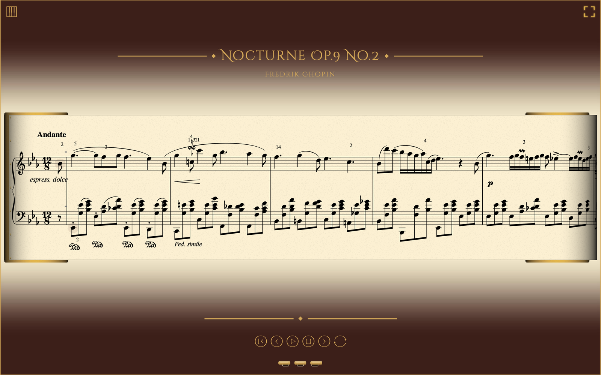

Sie tippen den Rhythmus — auf einem MIDI-Keyboard oder der Computertastatur —
Orchestrion spielt die Noten.
Orchestrion ist eine Desktop-App für Windows, macOS und Linux.
Kostenlos & Open Source (GPL-3.0) · alle Versionen
Rolls ist eine Bibliothek gemeinfreier und frei lizenzierter Partituren, gemacht für Orchestrion.
Rolls durchsuchen